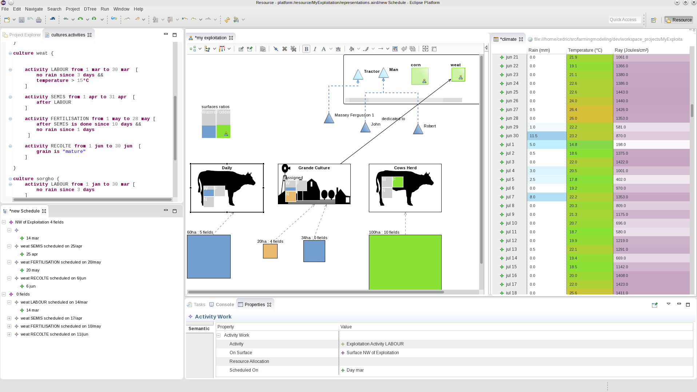
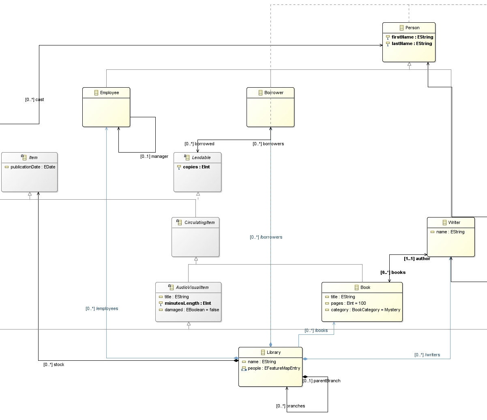
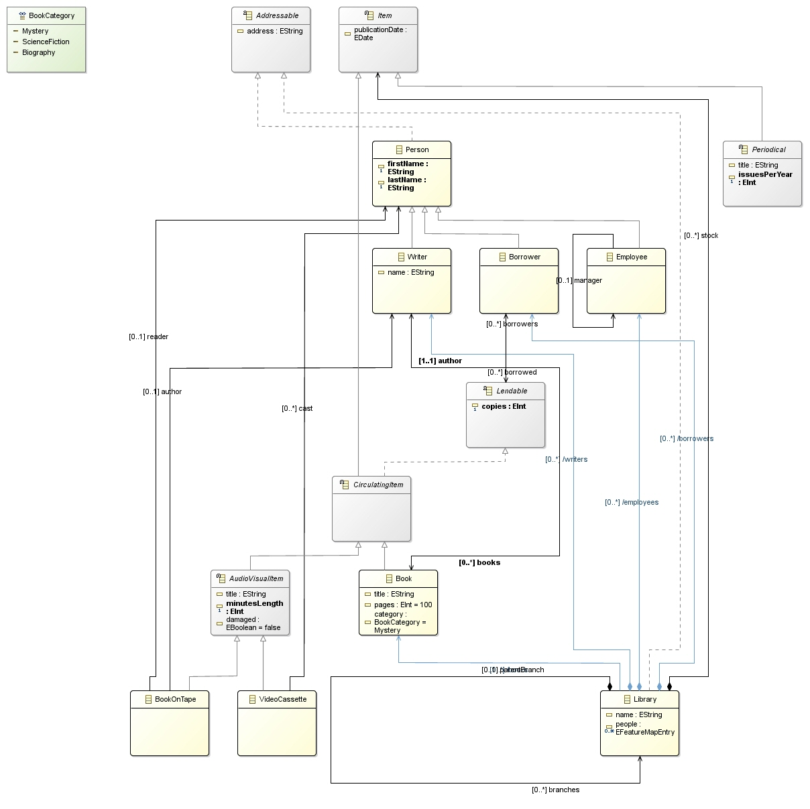
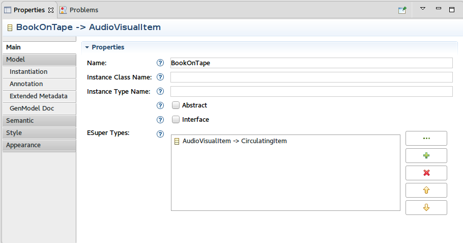
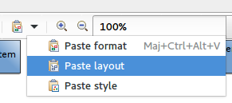
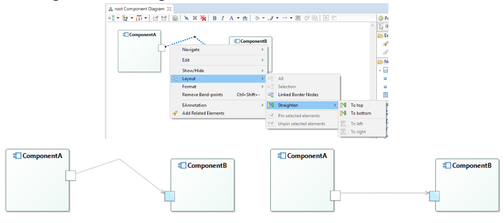
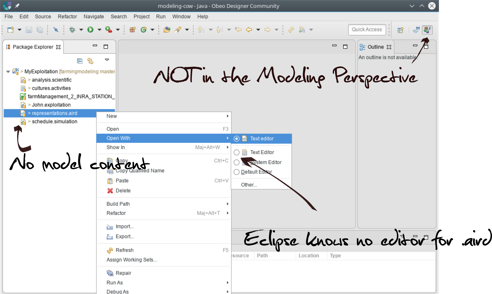
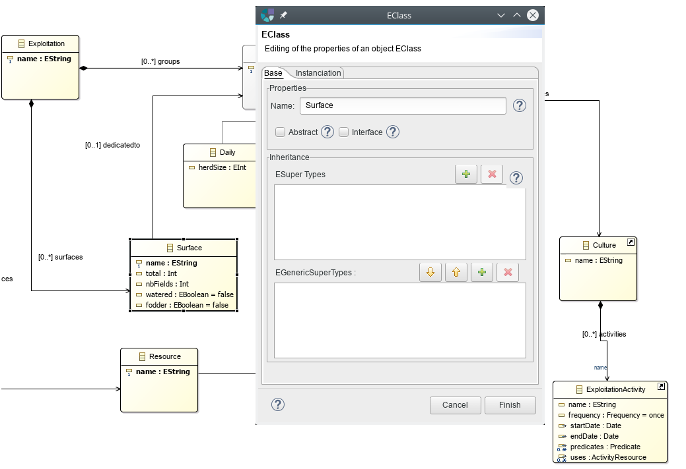

SiriusCon 2016
Roadmap
Cédric Brun, CTO@OBEO (@bruncedric)
Slides available at https://cedric.brun.io/talks/SiriusCon2016/
Agenda
- The Foundations of Sirius
- New and Noteworthy
- The rise of a community
- Next steps
“World-class modeling tools made easy.”
The Foundations of Sirius
Real-World ready
“Do not compromise on your domain model.
Tooling and metamodels are orthogonal.”
| Version | Date | Closed | Feature Requests | |
|---|---|---|---|---|
| 4.1.1 | Oct 25 | 71 | 24 | |
| 3.1.6 | Oct 11 | 11 | - | |
| 4.0.1 | Sept 06 | 12 | 1 | |
| 4.0.0(Neon) | June 22 | 82 | 15 | |
| 3.1.5 | Apr 18 | 9 | - | |
| 3.1.4 | Feb 09 | 3 | - | |
| 3.1.3 | Dec 7 | 9 | 2 | |
| 3.1.2 | Nov 6 | 1 | 1 | |
| 3.1.1 | Oct 29 | 5 | - | |
| 3.1.0 | Oct 15 | 65 | 16 | |
| Total | 268 | 59 | ||
Adaptable
Configure style and behavior directly using the model.

Pretty much everything is extensible using Java code.
Fast Iterations
No code generation
- Instant feedback
- Less accidental complexity
Find the best solution quicker, generate enthousiasm
Part of a whole
OpenSource
Play well with other technologies
https://www.eclipse.org/forums/eclipse.sirius
https://hudson.eclipse.org/sirius/
https://bugs.eclipse.org/bugs
https://git.eclipse.org/r/#/q/project:sirius/org.eclipse.sirius
The rise of an eco-system
- ...
- 28/01 ERTS
- 25/02 Embedded World
- 10/03 EclipseCon NA
- 21/04 Devoxx FR
- 13/06 EclipseCon FR
- 17/06 Web2Day
- 06/07 Roadshow Sirius Munich
- 07/10 Models
- 27/10 EclipseCon EU
- ...
From Challenger to Reference Technology
Enthousiasm
+1164 posts on the forum in 2016
221 authors on Github specifying Sirius based tools
[...] Paladio Software Architecture Simulator, Soltari NoSQL Visualization, Responsability Model Editor, Fault Tree Analysis, Enterprise Integration Patterns, [...]
Academic publications
- Varró, D. (2016, January). Incremental queries and transformations: From concepts to industrial applications. In International Conference on Current Trends in Theory and Practice of Informatics (pp. 51-59). Springer Berlin Heidelberg.
- Combemale, B., Brun, C., Champeau, J., Crégut, X., Deantoni, J., & Le Noir, J. (2016). A Tool-Supported Approach for Concurrent Execution of Heterogeneous Models. In 8th European Congress on Embedded Real Time Software and Systems (ERTS 2016).
- Maschotta, R., Jäger, S., & Zimmermann, A. Teaching Model Driven Architecture Approach with the Sirius Project.
- Combemale, B., Deantoni, J., Barais, O., Blouin, A., Bousse, E., Brun, C., ... & Vojtisek, D. (2015). A Solution to the TTC'15 Model Execution Case Using the GEMOC Studio. In 8th Transformation Tool Contest. CEUR.
- López-Fernández, J. J., Garmendia, A., Guerra, E., & de Lara, J. Example-based generation of graphical modelling environments.
- Oquendo, F., Leite, J., & Batista, T. (2016, April). Specifying Architecture Behavior with SysADL. In Software Architecture (WICSA), 2016 13th Working IEEE/IFIP Conference on (pp. 140-145). IEEE.
- ...
... and lectures! *
* there is an initiative taking form, contact me if you have, or is interested in material for coursesCompanion technologies
- Viatra: Pattern Langage, Query integration
- M2Doc: Document generation (MS-Office) from models
- EMF Compare: Diff & Merge & SCM integration
- Xtext: Textual syntax and editor
- Eclise Layout Kernel: diagram layout
EMF Compare

Xtext
Eclipse Layout Kernel
Eclipse Layout Kernel
New and Noteworthy
Acceleo Query Language
2015's major addition
I18N
And 57 other enhancements
Rich Properties View
- 
- 
- Mouse Middle button, Display links, Snap Back...
Better diagrams
- Image export quality
- SVG rendering at different zoom levels
- Specify post-tool elements to select
- Side constraints for ports
Better runtime
- Contribute reusable packs of shapes
- Improvements in .odesign editor
- Performances: instant closing of the project.
- First steps to reach another step of scalability a.k.a. RepresentationDescriptor
Next steps
World-Class Modeling Tools: Usable
- Domain Specific
- Wide choice of capabilities
- Iterate quickly to the right solution
- Process Aware
OSS Contribution from Thales: Activity Explorer

Things we ♡ in Sirius ...
Integrated, Easy and Dynamic
Opportunity to streamline user workflow
New mechanisms to enrich existing diagrams

Better widgets, Dialogs for properties
One model graph, hundreds of representations
Sirius keep representations in sync ...
... acknowledge they might have a different lifecycle ...
... but is currently loading & saving everything at once ...
Started in 2016, will go on in 2017
Size or Number of representations won't matter anymore
Planned Items
- Scalability in regard to # of representations
- Process Aware for your own Tooling
- Streamlined workflows in other Perspectives
- Richer and even more usable widgets for property views
- Composable capabilities to enrich existing diagrams
<Your priority, your involvement>
Rename/Refactoring, Table editor, RCP, Xtext++,
Web, Debug and Animation, Charts [...]
Nurture the community
TO BE CONTINUED...
Presented by Cédric Brun / @bruncedric
Slides published at https://cedric.brun.io/talks/